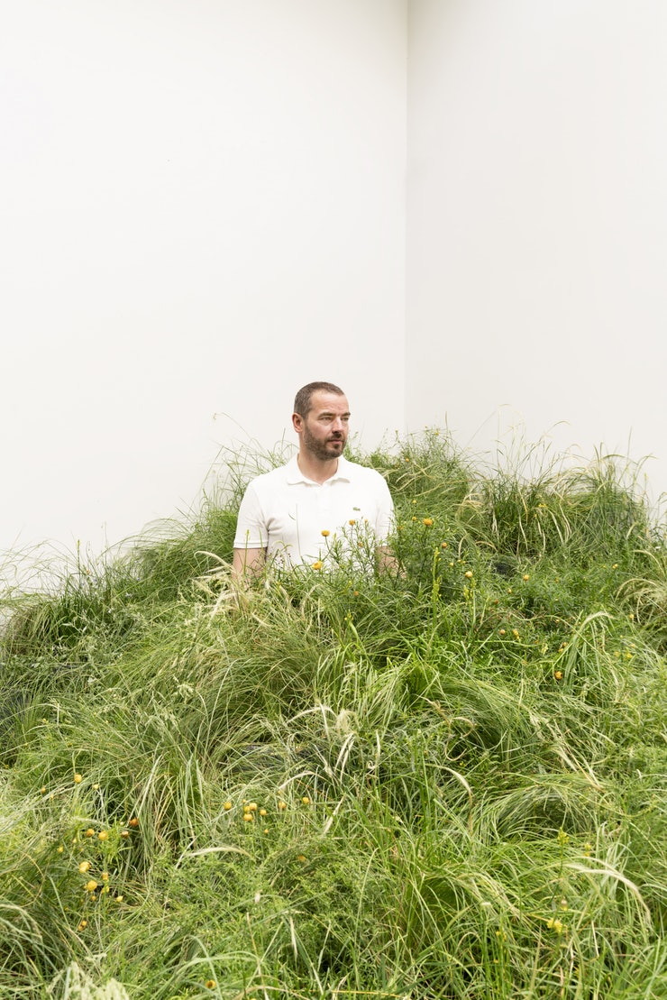
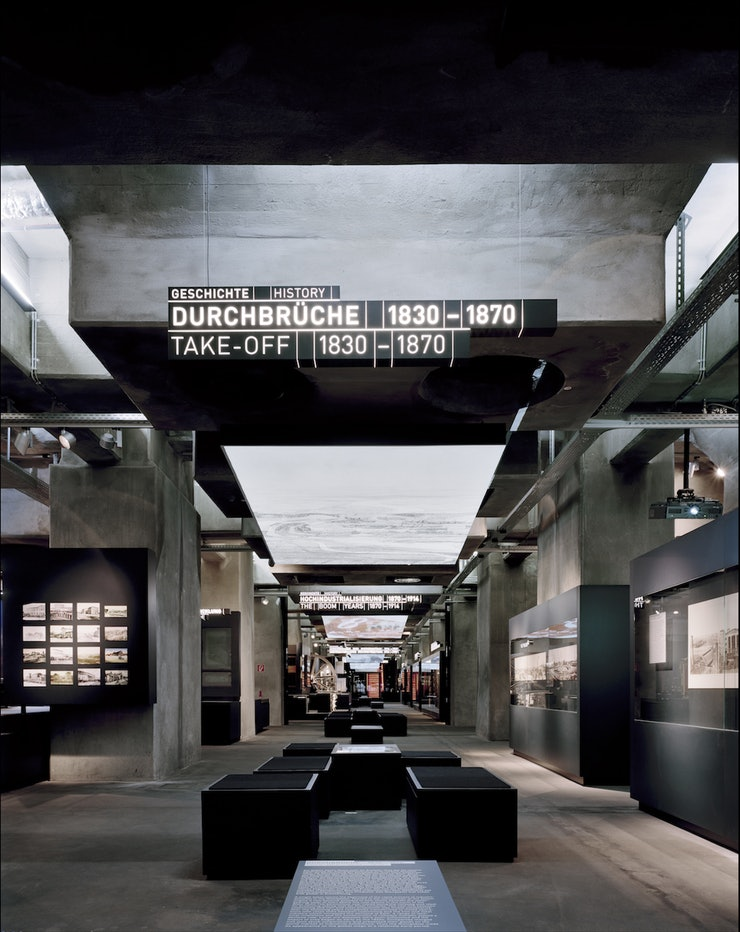

Commentary — Jul 24, 2018
Sascha Lobe's Visual Blog
This interview originally appeared online in Creative Review, 3rd July 2018. Sascha Lobe is the second designer to become a partner at Pentagram’s London studio this year. (MAP Project Office co-founder Jon Marshall joined in April.) Lobe’s background combines graphics, architecture and 3D design: he founded communications studio L2M3 in 1999 and has worked on exhibition graphics, identity projects and signage for some of the world’s best-known brands and cultural institutions. In 2014, Lobe and his team took on the coveted task of designing the first corporate identity for the Bauhaus-Archiv Museum in Berlin, creating a custom typeface that brings together elements of various designs from the archive. He recently collaborated with David Chipperfield Architects to create the signage and way finding for Korean beauty brand Amorepacific’s new 30-storey HQ in Seoul and has also worked with Mercedes Benz and Adidas as well as the Kunsthaus in Zürich and Luxembourg’s National Library.
Some of Lobe’s team will join him in London while others will remain in Stuttgart. He will also be recruiting new team members in London. He plans to continue working with German clients at Pentagram, as well as taking on new projects in the UK and other markets. Joining a company after running an independent practice is a major change – even more so when that studio is in a different country. Becoming a Partner at Pentagram also brings with it a certain amount of risk: Partners take on a share of overheads and have to meet profit expectations. Lobe admits it is “a big change” but says he is excited about the prospect of working under the Pentagram name. “I don’t know any other design studio which has such a long history and still seems to be up to date. I think it has such a gravity. That’s something I wanted [to be a part of], and I think I’m experienced enough now to grab such opportunities,” he says. Lobe has picked an interesting time to move to London. We are still none the wiser as to what Brexit will mean for the city’s creative and business communities, but he is optimistic about the capital’s future as a creative hub. “Of course [Brexit] is an issue because nobody knows what will happen in detail – up until now it was no problem to relocate here and now, I don’t know exactly – but Pentagram is international and my clients are international,” he adds.
